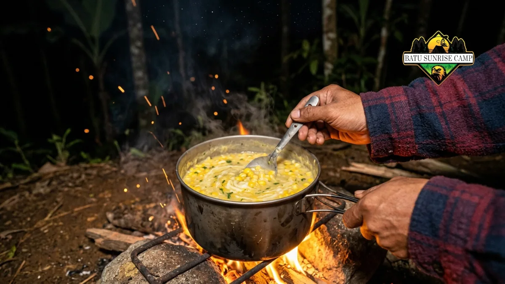

Resep masakan camping untuk hawa dingin sebaiknya berbahan sederhana, cepat dimasak, dan menghangatkan tubuh, seperti sup, wedang, nasi goreng, sate bakar, dan cokelat panas rempah yang mudah dibuat di alam terbuka.
Apa Itu Masakan Camping untuk Cuaca Dingin?
Masakan camping untuk cuaca dingin adalah menu yang dirancang khusus agar tubuh tetap hangat, energi tetap terjaga, dan proses memasaknya tidak merepotkan di tengah suhu udara yang rendah, terutama di kawasan pegunungan pada malam hari.
Menu semacam ini umumnya mengandalkan bahan yang tahan lama, mudah dibawa, serta dimasak dengan alat portabel seperti kompor gas kecil, panci lipat, atau di atas bara api unggun.
Fokus utamanya bukan pada kerumitan rasa, melainkan kepraktisan dan kehangatan yang dihasilkan.
Menu ini cocok untuk siapa saja yang berkemah di area dengan suhu rendah, baik individu, keluarga, maupun rombongan komunitas yang menginap semalam atau lebih di kawasan pegunungan.
Kenapa Suhu Dingin di Kawasan Pegunungan Butuh Menu Khusus?
Suhu dingin di kawasan pegunungan membuat tubuh kehilangan panas lebih cepat, sehingga dibutuhkan asupan hangat dan berenergi agar aktivitas camping tetap nyaman dan risiko kedinginan dapat diminimalkan.
Kawasan pegunungan seperti Batu di Jawa Timur umumnya memiliki suhu udara yang lebih rendah dibanding dataran rendah, terutama pada malam dan dini hari.
Kondisi ini membuat tubuh membutuhkan asupan kalori dan cairan hangat secara berkala.
Selain faktor suhu, kelembapan udara di malam hari juga dapat memperberat rasa dingin yang dirasakan.
Karena itu, menu berkuah, minuman hangat, dan makanan berlemak sehat sering menjadi pilihan utama saat camping di kawasan seperti ini.
Perencanaan menu yang tepat juga membantu menjaga stamina peserta camping, terutama jika esok harinya masih ada agenda seperti trekking ringan atau kegiatan komunitas lainnya.
Apa Saja Bahan yang Wajib Dibawa untuk Masak di Camp Dingin?
Bahan wajib untuk masak di camp dingin meliputi bumbu dasar kering, santan atau susu bubuk, jahe, rempah hangat, protein praktis seperti kornet atau sosis, dan minuman instan berbahan cokelat atau jahe.
Berikut daftar bahan yang umumnya disiapkan sebelum berangkat camping di area dingin:
- Bumbu dasar kering (bawang goreng, garam, kaldu bubuk, merica)
- Rempah hangat seperti jahe, kayu manis, dan cengkeh
- Santan bubuk atau susu full cream untuk menu berkuah
- Protein praktis seperti kornet kaleng, sosis, telur, dan daging siap bakar
- Sayuran tahan lama seperti wortel, jagung manis, dan kentang
- Minuman instan berbahan dasar cokelat, jahe, atau ronde
Membawa bahan dalam kemasan kedap udara juga membantu menjaga kesegaran selama perjalanan dan penyimpanan di lokasi camping.
5 Resep Praktis Masakan Camping Hawa Dingin
Berikut lima resep yang mudah dipraktikkan langsung di lokasi camping tanpa memerlukan alat masak rumit.
Resep 1: Sup Jagung Krim Hangat
Sup jagung krim hangat cocok sebagai menu pembuka yang cepat dimasak, menggunakan jagung manis, susu cair, dan sedikit merica untuk menghangatkan tubuh di malam hari.
Cara membuatnya cukup sederhana: rebus jagung pipil bersama air kaldu, tambahkan susu cair atau santan, lalu bumbui dengan garam dan merica secukupnya. Masak hingga mengental dan sajikan selagi panas.
Resep 2: Wedang Ronde Instan
Wedang ronde instan menjadi minuman penutup yang praktis, dibuat dari jahe, gula merah, dan ronde kemasan yang tinggal direbus bersama air panas di atas kompor portabel.
Rebus air bersama jahe geprek dan gula merah hingga mendidih dan aromanya keluar, lalu masukkan ronde instan hingga matang. Minuman ini efektif menghangatkan tubuh setelah aktivitas malam hari.
Resep 3: Nasi Goreng Kornet Praktis
Nasi goreng kornet praktis mengandalkan nasi sisa, kornet kaleng, dan bumbu instan sebagai menu utama yang mengenyangkan sekaligus mudah disiapkan di alat masak sederhana.
Tumis bawang dengan sedikit minyak, masukkan kornet, lalu tambahkan nasi dan bumbu penyedap. Aduk rata hingga semua bahan tercampur dan nasi terasa hangat merata.
Resep 4: Sate Bakar Sederhana untuk BBQ
Sate bakar sederhana cocok untuk sesi BBQ camping, menggunakan daging yang dimarinasi bumbu kecap dan bawang putih sebelum dibakar di atas bara api unggun atau panggangan portabel.
Potong daging sesuai selera, rendam dengan bumbu marinasi selama beberapa saat, lalu tusuk dan bakar hingga matang merata sambil sesekali diolesi sisa bumbu.
Resep 5: Cokelat Panas Rempah
Cokelat panas rempah dibuat dari bubuk cokelat, susu, dan sedikit kayu manis, cocok dinikmati menjelang tidur untuk menjaga tubuh tetap hangat sepanjang malam.
Panaskan susu bersama bubuk cokelat dan kayu manis bubuk sambil terus diaduk hingga larut sempurna, lalu sajikan dalam kondisi hangat.

Sup jagung krim hangat saat camping malam di pegunungan.
Bagaimana Cara Memasak Aman Saat Camping di Area Berangin?
Cara memasak aman di area berangin adalah dengan menempatkan kompor di sisi terlindung, menggunakan wind screen sederhana, dan menjauhkan bahan mudah terbakar dari sumber api.
Angin kencang di area pegunungan dapat memperbesar risiko api menyebar atau kompor padam tiba-tiba.
Sebaiknya posisi memasak diatur membelakangi arah angin dan menggunakan penghalang seperti batu atau tenda tambahan sebagai wind screen.
Pastikan juga tenda tidak berdiri terlalu dekat dengan titik memasak. Panduan lengkap mengenai pemasangan tenda tahan angin dapat dibaca pada artikel Cara Mendirikan Tenda yang Kokoh Mengantisipasi Angin Kencang Pegunungan Batu.
Apa Kesalahan Umum Saat Memasak di Camping Musim Dingin?
Kesalahan umum saat memasak di camping musim dingin meliputi membawa bahan basah berlebihan, tidak membawa cadangan gas, serta memasak tanpa memperhitungkan waktu karena suhu dingin memperlambat proses memasak.
Beberapa kesalahan yang sering terjadi antara lain:
- Membawa bahan segar terlalu banyak sehingga cepat rusak
- Tidak membawa cadangan bahan bakar kompor
- Memasak terlalu larut malam tanpa penerangan memadai
- Mengabaikan wadah kedap air untuk bumbu dan bahan kering
- Tidak memperhitungkan waktu masak yang cenderung lebih lama akibat suhu dingin
Menghindari kesalahan ini membantu proses memasak berjalan lebih lancar dan efisien selama camping berlangsung.
Tips Memilih Lokasi Camping dengan Fasilitas Memasak Lengkap
Lokasi camping dengan fasilitas memasak lengkap sebaiknya menyediakan akses listrik, sumber air bersih, dan area memasak yang terlindung dari angin agar proses masak-memasak lebih nyaman.
Beberapa lokasi campervan park di kawasan Batu umumnya sudah menyediakan fasilitas dasar seperti ini.
Detail lengkap mengenai lokasi, fasilitas listrik, dan akses air bersih dapat dibaca pada artikel Campervan Park Batu: Lokasi, Fasilitas Listrik, dan Akses Air Bersih.
Bagaimana Menyusun Rundown Masak-Memasak untuk Acara Komunitas?
Rundown masak-memasak untuk acara komunitas sebaiknya disusun berdasarkan waktu kedatangan peserta, sesi persiapan bahan, waktu memasak bersama, dan sesi makan yang disesuaikan dengan agenda campfire atau BBQ.
Penyusunan rundown yang jelas membantu menghindari tumpang tindih kegiatan, terutama jika acara melibatkan banyak peserta.
Panduan lengkap mengenai penyusunan rundown acara campfire dan BBQ untuk komunitas dapat dibaca pada artikel Tips Mengatur Rundown Acara Campfire dan BBQ untuk Acara Komunitas di Batu.
Kesimpulan
Menyiapkan resep masakan camping untuk cuaca dingin sebaiknya difokuskan pada kepraktisan, kehangatan, dan kemudahan proses memasak di lokasi terbuka.
Lima resep di atas, mulai dari sup jagung krim hingga cokelat panas rempah, dapat menjadi pilihan menu andalan.
Pastikan pula lokasi camping mendukung aktivitas memasak, tenda terpasang kokoh menghadapi angin, dan rundown acara tersusun rapi agar pengalaman camping di kawasan dingin seperti Batu terasa nyaman dari awal hingga akhir.